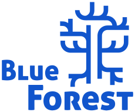

Avoir de vraies informations avant d'acheter
Vendre en amortissant mes décisions écologiques
Connaître, dans mes achats, ce qui ne semble pas écologique et qui pourtant l'est
Connaître, dans mes achats, ce qui semble écologique et qui pourtant ne l'est pas
Me faire une idée de l'impact de mes choix
Vendre en reportant les qualités écologiques de mes fournisseurs
Créer un marché dynamique et durable, imitant la nature
Visualiser les ressources nécessaires à la confection d'un produit
Accorder créateurs de déchets, acheteurs de matières premières, et experts en réutilisation